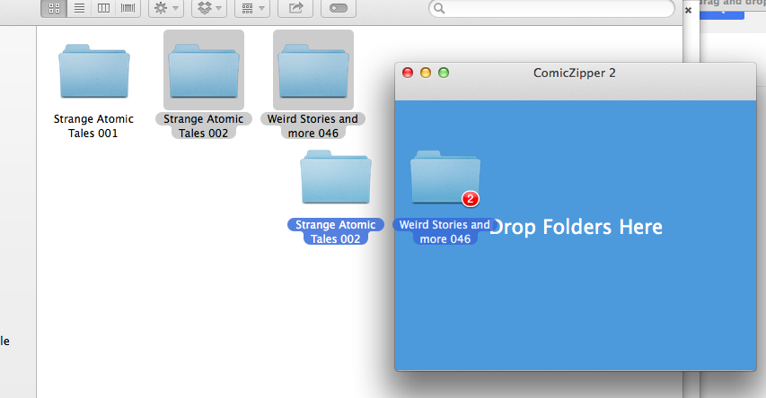
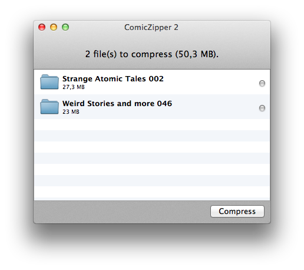
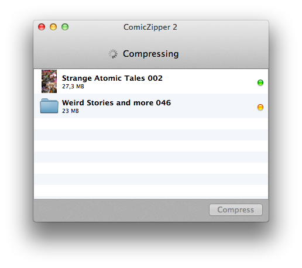
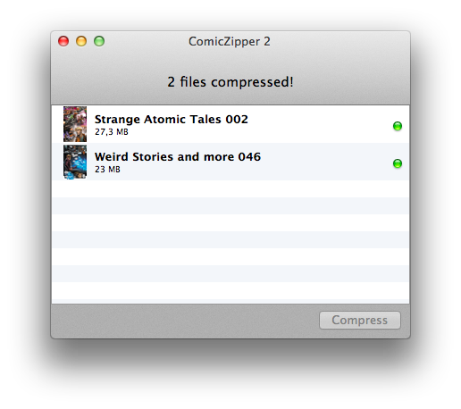

ComicZipper 2
Create comic book archives – the easy way.
Introduction
ComicZipper 2 allows you to create comic book archives (.cbr files) with ease.
Creating archives
STEP 1. To create an archive just drag and drop the folder(s), containing the images that will make up the comic book, to the app, like so:

STEP 2. Added folders are shown in the the folder list, that will show up when there are files to compress.

STEP 3. To begin the process, just press the button "Compress". The app will let you know when a folder has been compressed. Notifications are also avaiable through the preferences panel.

STEP 4. When finished, either close the app, clear the folder list (by selecting the items and pressing backspace) to begin anew or just drag new files to the folder list.
